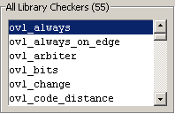

To access: Displayed upon invocation; see “Invoking the OVL Checkers Manager”.
The OVL Manager window contains two list boxes. One displays a list of “Customized Checkers,” the other displays a list of “All Library Checkers.” It also contains two tabs; a Properties tab and a Description tab.
These attributes are shown in the OVL Manager Window.
Customized Checkers list box — Displays a list of Customized Checkers created from the standard OVL assertion checkers.
All Library Checkers list box — Displays a list of all available OVL Checkers for the selected language.
Properties tab — Displays a workspace where you can edit checker properties to create customized assertion checkers.
Description tab — Displays a description of the OVL checker which includes the data sheet model and a usage example.
The Customized Checkers list box contains the OVL checkers that have been added from the All Library Checkers list box. The compile status of each checker in this list is indicated by its color (Figure 2), as follows:
Indicates when the checker is not supported for the selected language.
Indicates a checker that failed to compile and an error is reported in the transcript.
Indicates a checker that compiled successfully.
Indicates a checker that is uncompiled.
You can select checkers to add to the Customized Checkers list by selecting a checker from the All Library Checkers list, then clicking the Customize Library Checker button in the toolbar.
The All Library Checkers list box contains all OVL checkers available in Version 2.8.1 of the OVL software for the selected implementation language. (See, “Selecting an Implementation Language”.) The number of checkers available for each language is indicated in parenthesis.
In the example shown below, 55 OVL checkers are available for SVA implementations (as indicated by the number in parentheses following the heading). The OVL checkers available number shows up after the heading in VHDL implementations in the same way..
